Studentenprojecten met p5
Wat kun je met AI en p5.js visueel ontwerpen, genereren en verbeelden?
Wat hebben we gedaan?
Voor dit project hebben wij, studenten van CMD samengebracht rondom p5.js en AI. Met behulp van AI hebben we prompts ontwikkeld waarmee visuele composities gegenereerd konden worden. Vervolgens werden deze ontwerpen vertaald naar p5.js-code en verder verfijnd.
Lees meer →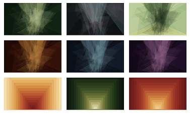
*Bijpassende foto komt hier*
Projecten
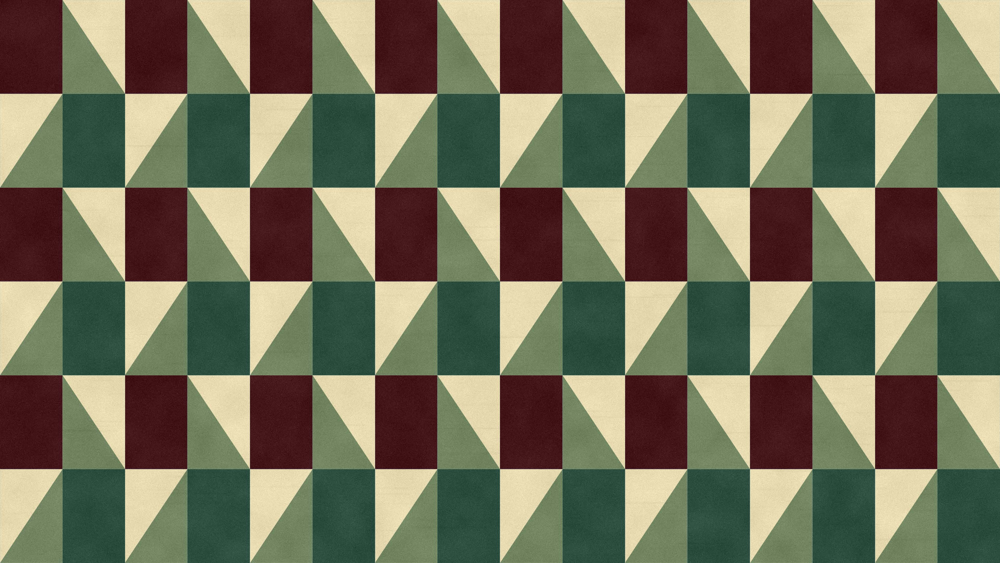
Wereldmuseum bezoekersstroom simulatie
Korte beschrijving van het project.
Lees meer →
RAAIT Toolbox
Korte beschrijving van het project.
Lees meer →
Responsible IT Website
Korte beschrijving van het project.
Lees meer →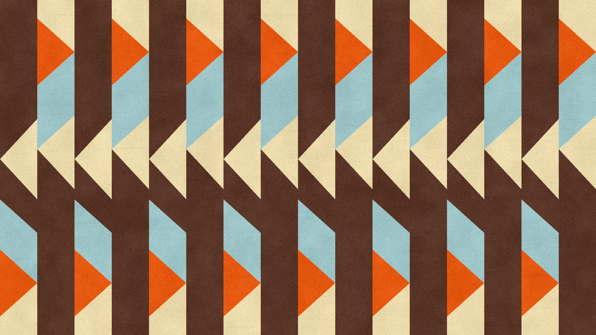
P5.js kunst
Korte beschrijving van het project.
Lees meer →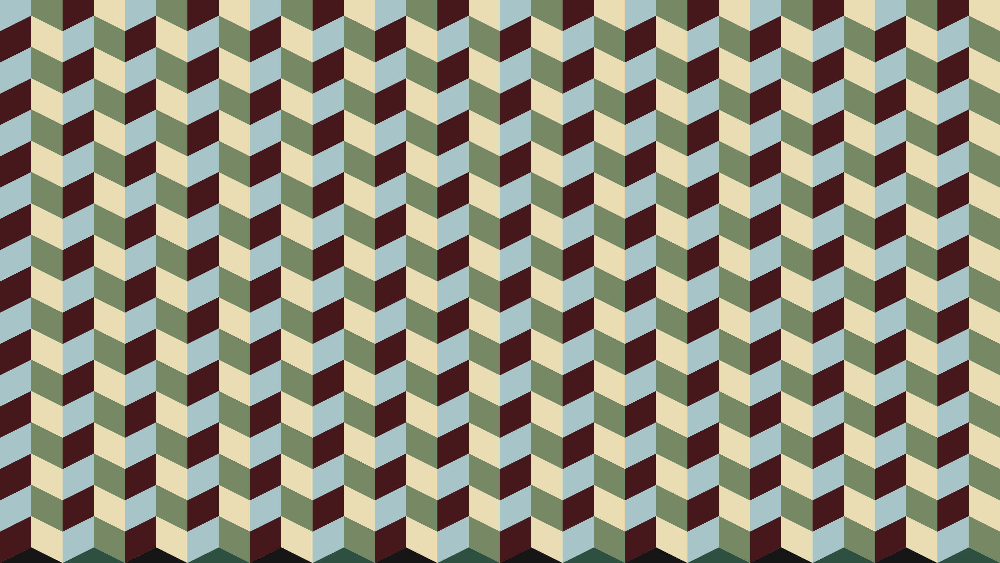
Brainrot Generator
Korte beschrijving van het project.
Lees meer →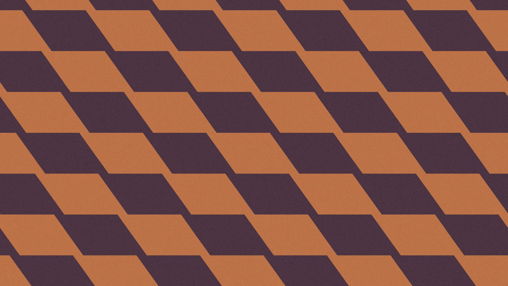
Crowd Simulator
Korte beschrijving van het project.
Lees meer →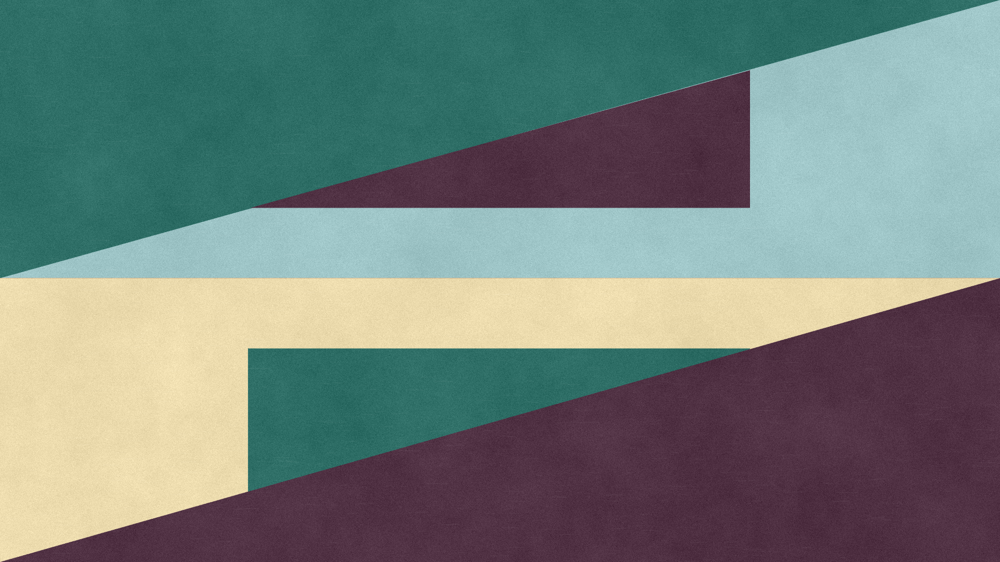
Crime Scripting
Placeholder tekst.
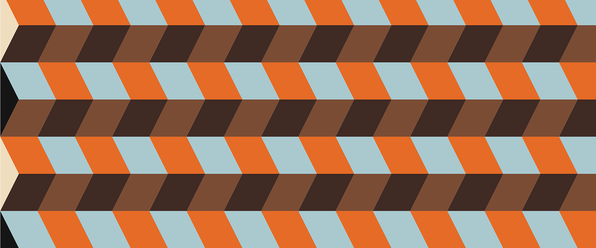
Groen promten met LLM's
Placeholder tekst.
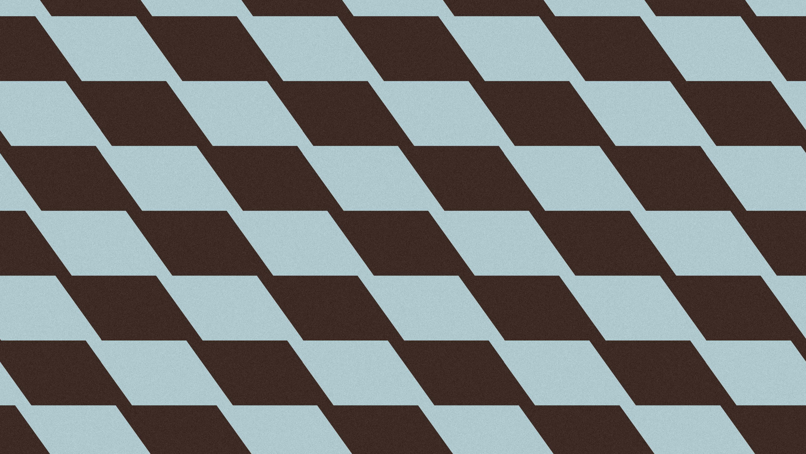
Debat Coach
Placeholder tekst.
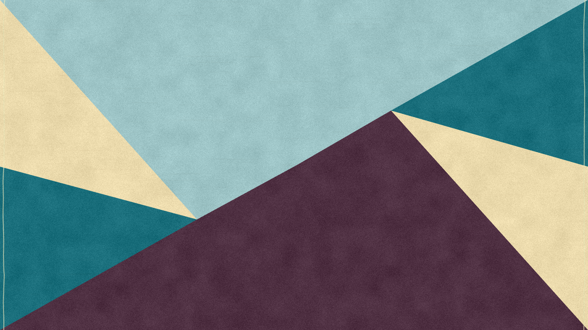
Toolkit Lessen Desinformatie
Placeholder tekst.
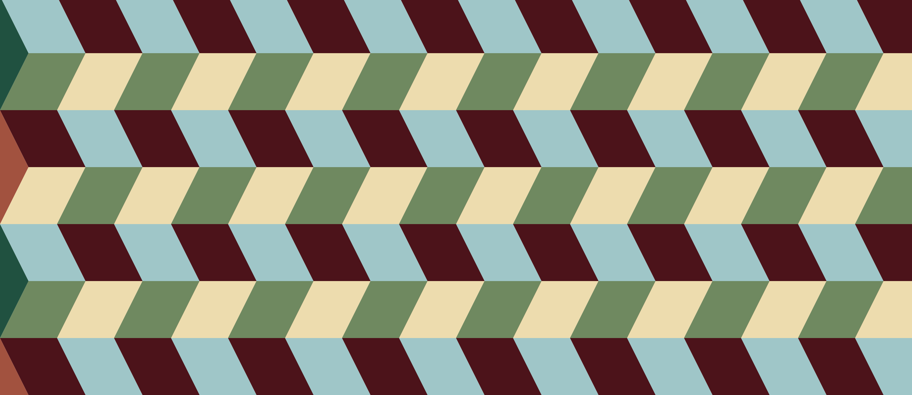
Fashion Police
Placeholder tekst.
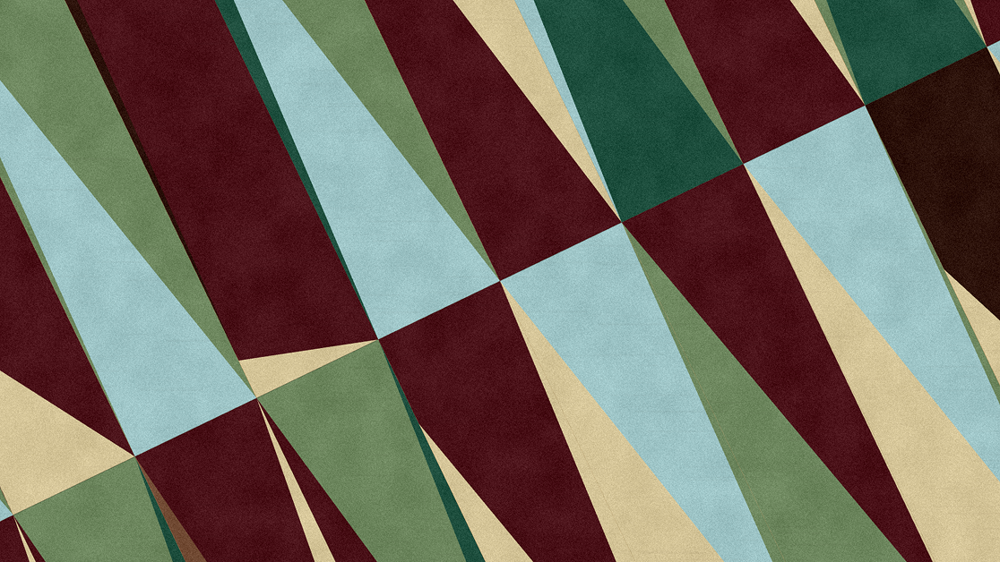
AiAiAi
Placeholder tekst.
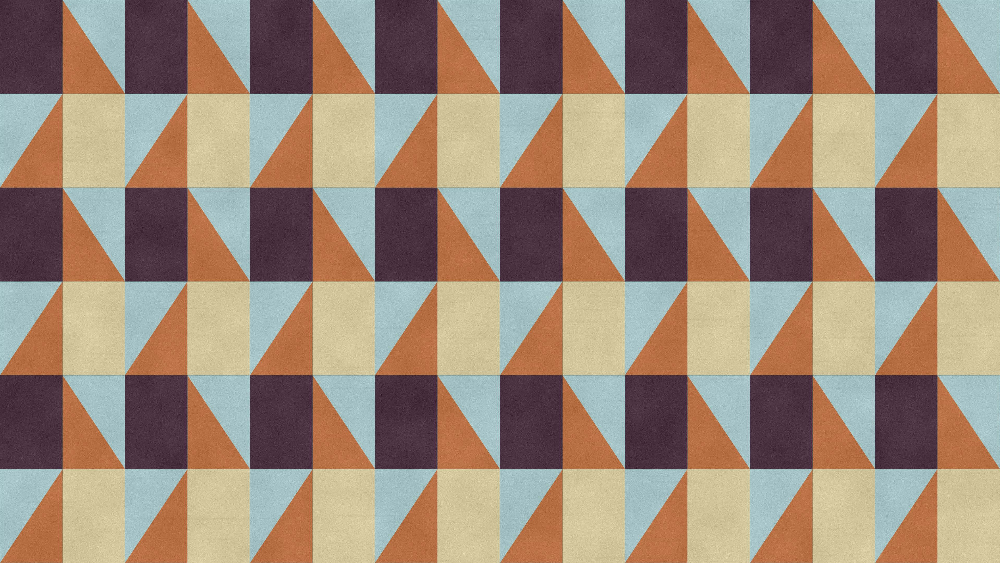
Wifi zonder socials test
Placeholder tekst.
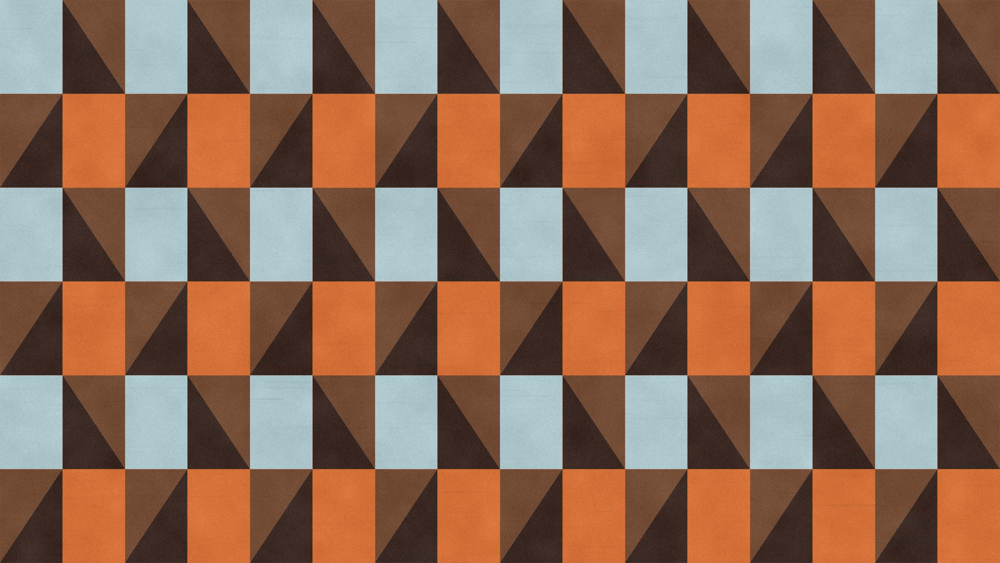
Project 14
Placeholder tekst.
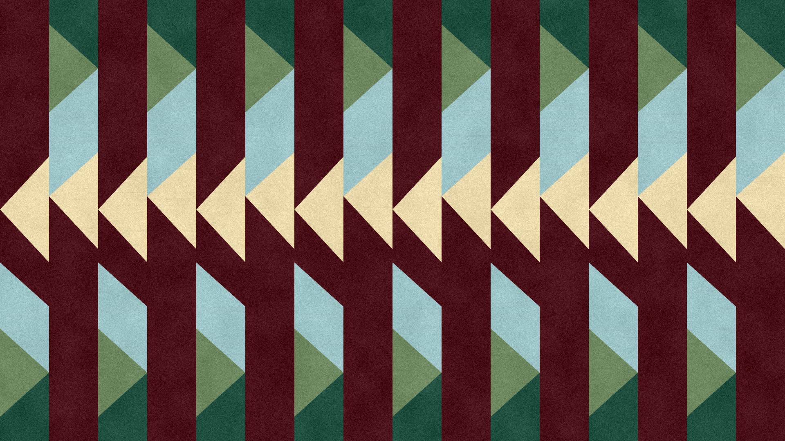
Project 15
Placeholder tekst.
P5.js is een creatieve programmeertool waarmee je met JavaScript visuele en interactieve ontwerpen maakt. Denk aan animaties, generatieve kunst, interactieve achtergronden, datavisualisaties en simpele games die direct in de browser draaien.
Voor dit project hebben wij, tweedejaars CMD-studenten Eliza, Tess, Peter en Gloria, een herontwerp gemaakt van de bestaande Responsible IT-website. Hierbij werden P5.js-ontwerpen gebruikt als banners. Veel projecten op de website hadden namelijk geen eigen afbeelding en vaak was er ook weinig samenhang tussen de afbeeldingen die er wel waren. Daarom besloten we dat generatieve P5.js-kunst een betere oplossing zou zijn.
Dit hebben we gedaan door middel van vibecoding. Vibecoding betekent dat je met AI code laat genereren op basis van beschrijvingen in natuurlijke taal, zonder zelf veel code te schrijven. Klinkt makkelijk, maar er komt toch veel meer bij kijken dan je misschien denkt.
We kregen een workshop van docent-onderzoeker Bas Pijls-van Kooten, waarin stap voor stap werd uitgelegd hoe je aan de slag kunt gaan met P5.js. Daarnaast kregen we opdrachten van eerstejaars ICT-studenten waarmee we onze basiskennis van JavaScript konden testen (zie bronnen). We deden opdrachten zoals het groter en kleiner maken van een cirkel, achtergronden aanpassen, strokes toevoegen en andere basisfuncties uitproberen. Bas liet ook eigen projecten zien die hij met P5.js had gemaakt, zoals spelletjes, interactieve ontwerpen en andere creatieve toepassingen. Hierdoor kregen we een goed beeld van de mogelijkheden van P5.js. We hadden hier nog niet eerder mee gewerkt en waren verrast door hoeveel je ermee kunt maken.
Benieuwd naar de ICT-opdrachten? Bekijk ze hier:
Stappenplan
Wil je zelf aan de slag? Volg dan deze stappen om een goed beeld te krijgen van het proces van het ontwerpen van een P5.js-ontwerp door middel van vibecoding. Wij hebben de fouten al gemaakt, waardoor jij hopelijk soepeler door het proces heen kunt gaan.
Bekijk eerst waarvoor je het gaat maken. Is het puur om te experimenteren of werk je aan een opdracht? Zijn er bepaalde eisen waar het ontwerp aan moet voldoen? Moet het abstract zijn, interactief of juist een stilstaand beeld? Dit hoeft nog niet tot in detail uitgewerkt te zijn. Als je dit globaal voor jezelf op een rijtje zet, merk je dat je veel gestructureerder gaat werken.
Ga op zoek naar inspiratie online, bijvoorbeeld op Pinterest. Je kunt natuurlijk ook eigen tekeningen, schilderijen of schetsen gebruiken. Denk daarbij goed na over wat je precies wilt meenemen uit de inspiratiebron. Zijn het de kleuren, de textuur of juist de vormen? Hiermee voorkom je dat belangrijke onderdelen vergeten worden in je prompt. Een beeld zegt vaak meer dan duizend woorden, maar je hoeft niet altijd afbeeldingen te gebruiken. Je kunt ook in je eigen woorden beschrijven wat je voor je wilt zien.
Nu komt een van de belangrijkste onderdelen van het proces: het schrijven van een goede prompt. Kies hiervoor een AI-tool naar keuze. Wij raden aan om niet te lang bij een tool te blijven hangen, maar verschillende tools uit te proberen. Zo ontdek je welke het beste bij jouw manier van werken past. Vooral wanneer je geen afbeelding gebruikt, is het belangrijk om zo duidelijk mogelijk te beschrijven wat je bedoelt.
Voor een goede prompt kun je de volgende punten meenemen:
- - Benoem dat het om P5.js-code gaat (anders genereert AI soms een afbeelding in plaats van code).
- - Benoem het formaat (bijvoorbeeld 400 × 400 pixels).
- - Benoem de kleuren en contrast.
- - Geef aan of het ontwerp interactief of statisch moet zijn.
- - Benoem of het alleen om JavaScript gaat of ook om HTML-code.
- - Vraag om een Engelstalige prompt (dit werkt vaak beter voor codegeneratie).
- - Benoem voor welke AI-tool de prompt bedoeld is (bijvoorbeeld voor Claude).
- - Benoem dat de code semantisch en overzichtelijk moet zijn.
- - Beschrijf hoe het ontwerp zich over het canvas moet verspreiden.
- - Voeg extra details toe zoals effecten, texturen, diepte en beweging.
Laat vervolgens de prompt genereren en controleer of alles klopt. Dit hoeft niet lang te duren, maar het is belangrijk om even door de tekst heen te lopen. Regelmatig verschijnen er dingen in een prompt die je helemaal niet had bedoeld. Zodra de code eenmaal gegenereerd is, kan het lastig zijn om die fouten er weer uit te halen.
Slechte prompt
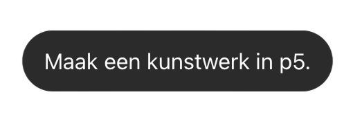
Goede prompt prompt
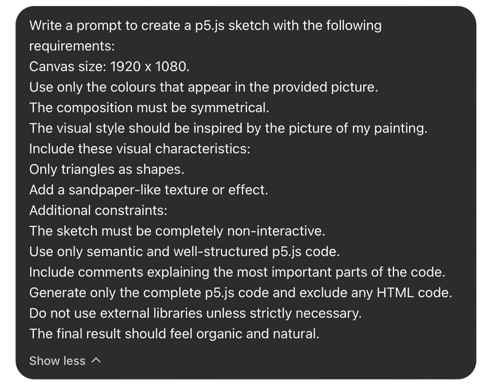
Nu je een goede prompt hebt, is het tijd om de code te laten genereren. Dit is een mooi moment om verschillende AI-tools uit te proberen. Je zult merken dat dezelfde prompt bij verschillende tools vaak andere resultaten oplevert. Een paar tools die wij aanraden zijn:
- - ChatGPT
- - Gemini
- - Claude
- - HvA AI Chat
- - Codex
- - Copilot
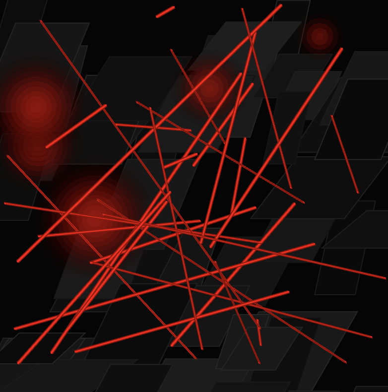
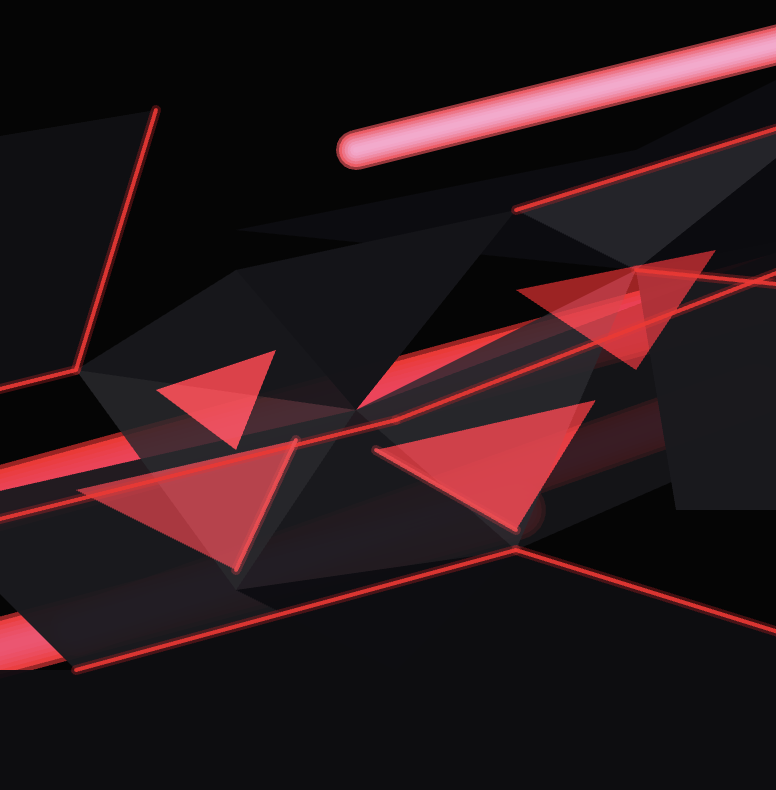
Copilot
Hva AI Chat (Gpt 5.1)
inspiratie foto:
Wil je meer over het verschil tussen de AI-tools weten? Bekijk de p5-tools analyse hier:
Neem de gegenereerde code over in bijvoorbeeld VSCode en test deze uit. Wij gebruikten hiervoor de P5 Live Preview-extensie, zodat we direct konden zien wat er gebeurde. Let hierbij op:
- - Kleuren
- - Contrast
- - Textuur
- - Formaat
- - Prestaties
Wanneer je weet wat er aangepast moet worden, kun je teruggaan naar de AI-tool en aangeven wat je wilt veranderen. Je kunt hiervoor zelf een nieuwe prompt schrijven of opnieuw een AI-tool gebruiken om een verbeterde prompt te laten genereren. Controleer ook deze prompt weer voordat je hem gebruikt. Ben je tevreden met het resultaat? Dan kun je doorgaan naar een volgend ontwerp. Wij raden aan om hiervoor een nieuwe chat te starten. Zo voorkom je dat oude ontwerpen of eerdere instructies invloed hebben op je nieuwe project.
Tijdens het proces merkten we dat iedereen met dezelfde tools werkte, maar toch heel verschillende resultaten kreeg. Hoe komt dat?
We hebben onze code met elkaar vergeleken en zagen dat sommige van de meer opvallende ontwerpen gebruikmaakten van code die niet volledig volgens de P5.js-structuur was opgebouwd. Daardoor waren er soms meer mogelijkheden beschikbaar. Uiteindelijk moesten alle ontwerpen wel weer worden aangepast zodat ze binnen de eisen van het project pasten.
Een andere belangrijke observatie was het verschil in de lengte en diepgang van prompts. Sommige studenten schreven veel uitgebreidere prompts, waardoor de ontwerpen specifieker en persoonlijker werden. Dit is belangrijk als je je eigen stijl in een ontwerp wilt verwerken. Als je weinig richting geeft, gaat de AI veel keuzes voor je maken. Daardoor krijg je sneller een generiek resultaat dat misschien niet aansluit bij wat je voor ogen had.
Ook zagen we verschillen in hoe mensen met AI-tools werkten. Sommigen bleven heel lang in dezelfde chat werken, terwijl anderen steeds een nieuwe chat begonnen. Wij raden aan om regelmatig een nieuwe chat te starten. Hierdoor voorkom je dat oude informatie nieuwe ontwerpen beïnvloedt.
Als laatste hebben we alle ontwerpen verzameld in een collage en carrousel op een website die grotendeels met vibecoding is gemaakt. Hiermee konden we testen of de ontwerpen ook goed werkten binnen een echte websiteomgeving. Benieuwd naar onze ontwerpen?
Bekijk ze hier:
Onze grootste tip is: blijf experimenteren.
Blijf niet te lang hangen bij een tool, maar probeer verschillende mogelijkheden uit. Hierdoor ontdek je sneller verschillen tussen tools en kun je uiteindelijk betere resultaten behalen. Daarnaast raden we aan om Codex vooral te gebruiken voor het genereren van code en andere AI-tools voor het schrijven of verbeteren van prompts. Probeer ook niet te lang in dezelfde chat te blijven werken. Nieuwe chats zorgen vaak voor frissere resultaten en voorkomen dat AI blijft voortbouwen op eerdere ontwerpen.
Tot slot: wees zo specifiek mogelijk. Benoem bijvoorbeeld waar het ontwerp moet verschijnen. Moet het over het hele canvas lopen? Alleen in het midden? Rechtsboven in beeld? Hoe duidelijker jouw instructies zijn, hoe beter het resultaat wordt. Zorg er dus voor dat jij altijd de controle houdt over het proces.
Performance
Een P5.js-ontwerp kan best zwaar zijn voor een website. Vooral wanneer je meerdere P5-sketches tegelijk op één pagina wilt laden, kan de performance snel omlaag gaan. Elke P5-sketch start namelijk zijn eigen canvas en animatieloop. Als er veel sketches tegelijk worden ingeladen, moet de browser veel tegelijk berekenen en renderen. Hierdoor kan de pagina langzaam laden of gaan haperen.
Daarom is het belangrijk om bij het genereren van P5-code niet alleen naar het uiterlijk te kijken, maar ook naar hoe zwaar de code is. Vraag de AI bijvoorbeeld om efficiënte P5.js-code te schrijven. Laat onnodig zware loops, extreem veel particles of continu bewegende elementen vermijden als dat niet nodig is. Wanneer een ontwerp statisch mag zijn, kun je beter vragen om noLoop() te gebruiken, zodat draw() niet steeds opnieuw blijft draaien.
Ook het formaat van het canvas is belangrijk. Een groot canvas ziet er mooi uit, maar kost ook meer rekenkracht. Gebruik daarom alleen een groot formaat wanneer dat echt nodig is. Voor kleine previews of meerdere ontwerpen op één pagina kun je beter een kleinere of lichtere versie gebruiken dan voor een grote banner.
Wanneer je veel P5-sketches op één pagina wilt tonen, helpt het om lazy loading toe te voegen. Lazy loading betekent dat onderdelen van een pagina pas worden geladen wanneer ze bijna nodig zijn. In het geval van P5.js kun je ervoor zorgen dat een sketch pas start wanneer die bijna in beeld komt. Daardoor hoeft de browser niet alle sketches meteen bij het openen van de pagina te laden. De eerste laadtijd wordt lichter en de pagina blijft soepeler werken.
Voor de beste performance raden we aan om P5-sketches altijd in de echte websitecontext te testen. Een sketch kan los goed werken, maar alsnog te zwaar zijn wanneer er meerdere tegelijk op een pagina staan. Let daarom tijdens het testen niet alleen op kleur, vorm en interactie, maar ook op laadtijd, haperingen en hoe soepel de pagina blijft werken.
Het maken van P5.js-ontwerpen is een leuk project voor CMD-studenten die kennis willen maken met creatief programmeren. Je leert niet alleen de basis van JavaScript kennen, maar ook hoe je AI kunt inzetten om ontwerpen te maken door middel van vibecoding en prompt engineering.
Tijdens ons proces hebben we veel geleerd over het schrijven van prompts, het testen van code en het itereren op ontwerpen. We hebben ontdekt dat AI een krachtig hulpmiddel kan zijn, zolang je zelf de regie houdt en kritisch blijft kijken naar de resultaten.
Uiteindelijk draait het niet om wat de AI maakt, maar om de keuzes die jij als ontwerper maakt.